Tamaki, Mie: things to do, food and stays
Tamaki · Mie
Tamaki
Highlighted on the Mie map.

Stay
No bookable places to stay found in Tamaki — nearest options in Watarai.
Dining
王富

O Tomi
acatoki
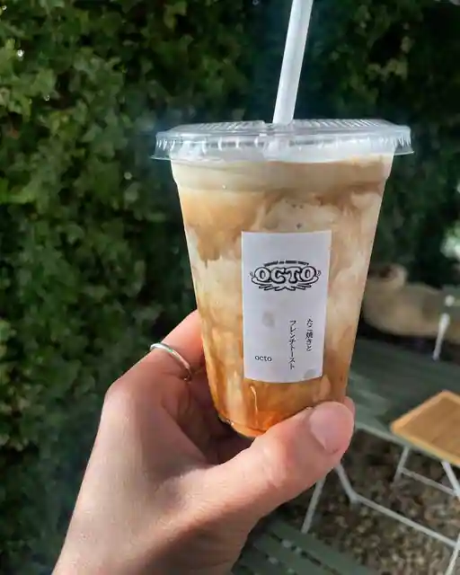
acatoki
みや古
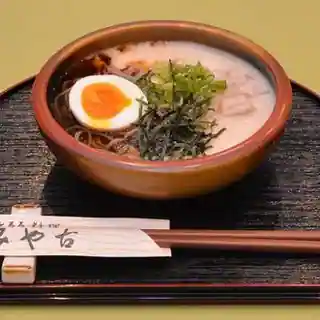
Miya Ko
野中屋
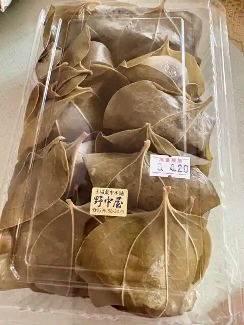
Nonaka Ya
ポレポレカフェ
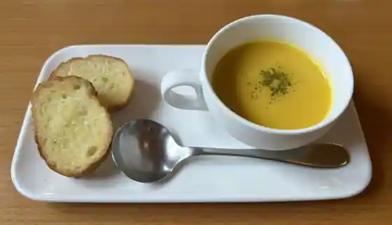
Porepore Cafe
旬菜 野の花亭
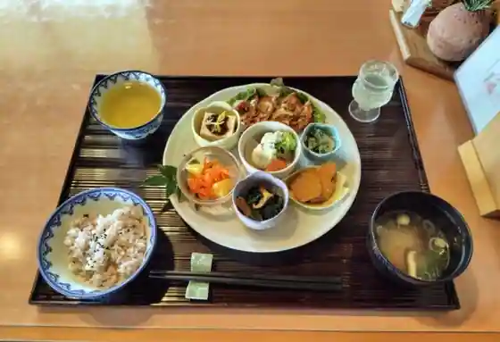
Jun Na No No Hana Tei
おさやん
Osayan
Garden cafe Bonheur
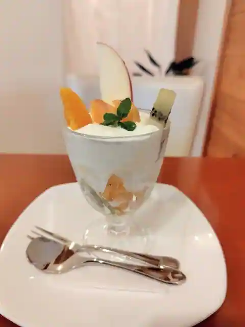
Garden cafe Bonheur
513ベーカリー 三重玉城店
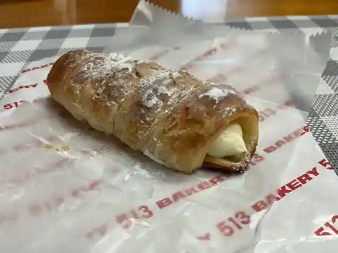
513 Bakery Mie Tamaki
中井精肉店
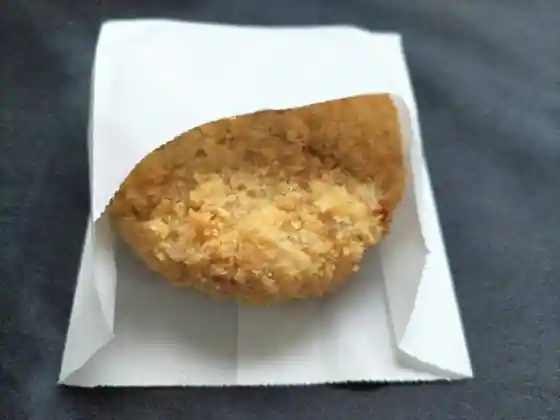
Nakai Seiniku
カントリーハウス
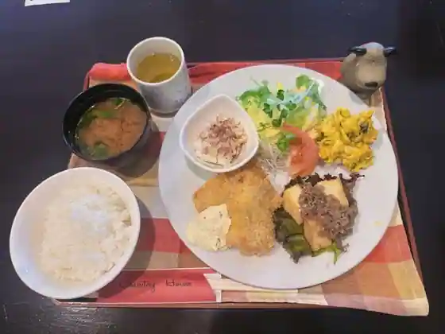
Kantori House
伊勢カントリークラブレストラン
Ise Kantorikurabu Restaurant
ことり食堂
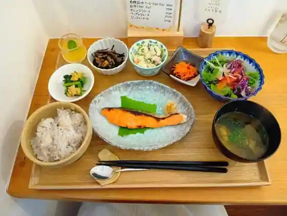
Kotori Shokudo
七十二候
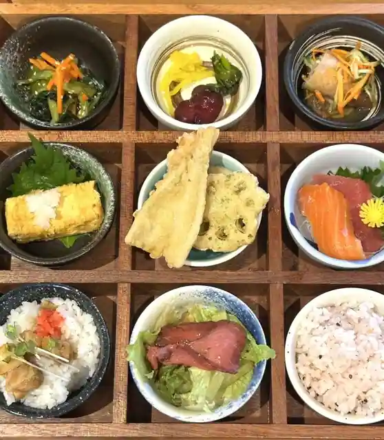
Shichiju Ni Soro
菓奏 ししん
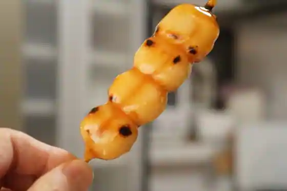
Ka So Shishin
TAMAKITCHEN とんとん
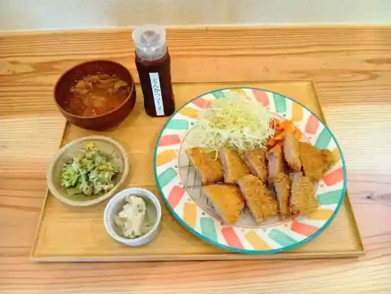
TAMAKITCHEN Tonton
Cavallo portare
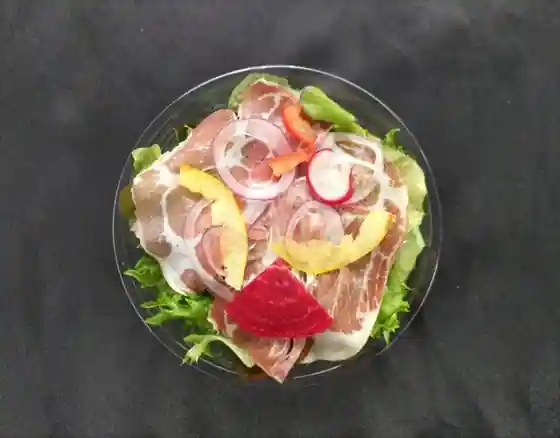
Cavallo portare
すいーとぴー
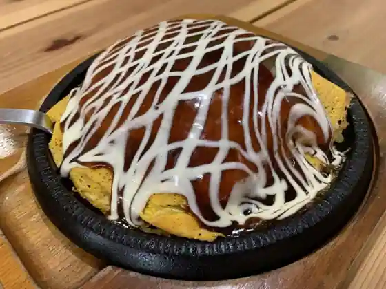
Suitopi
タコハウス
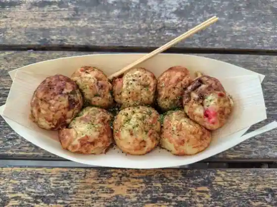
Tako House
さつまラーメン
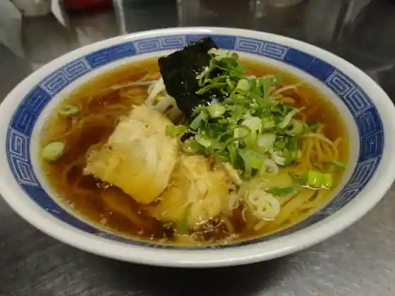
Satsuma Ramen
たいやき わらしべ 本店
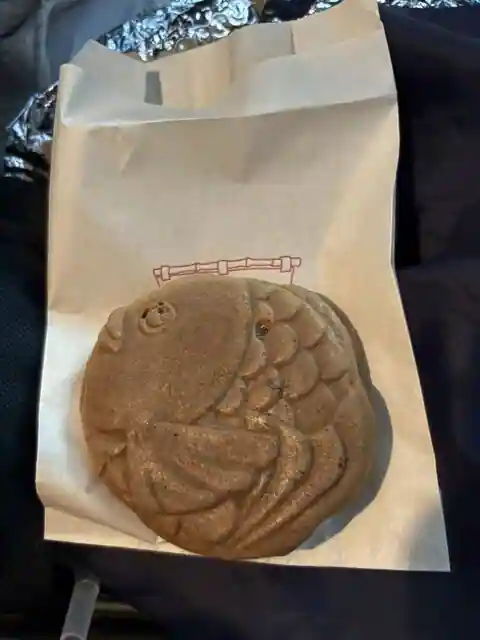
Taiyaki Warashibe Hon
へいきちらーめん
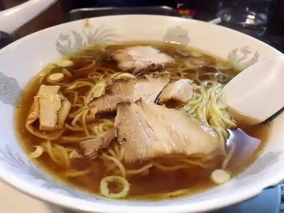
Heikichi Ramen
かつQ 玉城店
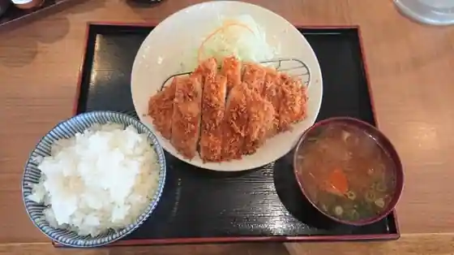
Katsu Q Tamaki
きのこ村
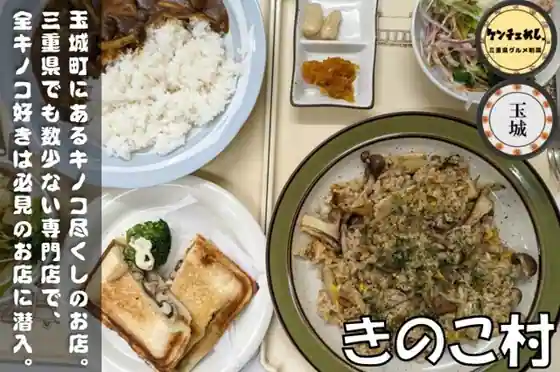
Kinoko Mura
Sights
Furusato Aji Kobo Aguri

Asupia Tamaki Aguri no Himawari Hatake
Oga Hasu (Tamaki Town Hall Yokochi Hori)

Murayama Ryuhei Memorial Museum

Asupia Tamaki Aguri no Na no Hanahata

Asupia Tamaki Fureai no Kan (Tamaki Hironori Onsen)
Asupia Tamaki Aguri no Kosumosu Hatake
Tomi Mukaiyama Tamiya Tera
Tamaki Suihen no Raku Ko
Furusato Aji Kobo Aguri (Tezu Kuri Soseji Kyoshitsu)
Asupia Tamaki
Gen Kabuto Sha
Sen Hiki Shrine Fuji no Hana
Tamaru Castle Ruins
Higashi Gaijo Ta Shrine
Sachi Shrine
Tamaru Shrine
Tamaki Fureai Farm
Ko Yasushi Tera
Azuchi Park
Yamada Tera
Tamaki Ei Tenisukoto
Ta no Ie Shrine
Ka no Shrine
Fujimi Mon